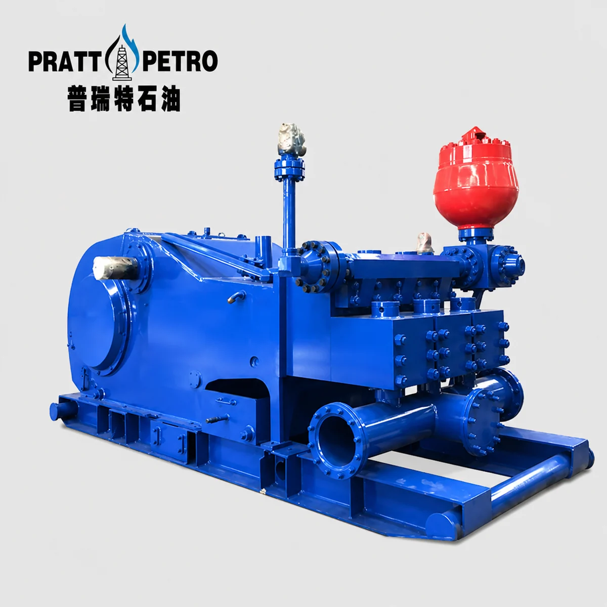

Mud Pump Parts / MODEL RANGE
FC1600 Mud Pump Spare Parts
Pratt Oil supplies a complete range of spare parts for FC1600 triplex mud pumps used in oil and gas drilling operations.
Send your part number, pump nameplate, drawing or component photos to confirm the correct replacement.

MAINTENANCE / REPAIR / OVERHAUL
Replacement parts we supply
- Fluid end modules
- Liners and pistons
- Valves and valve seats
- Piston rods and extension rods
- Crossheads and guides
- Crankshafts and pinion shafts
- Connecting rods and bearings
- Valve covers and liner retainers
- Seals, gaskets, and repair kits
- Suction and discharge manifold parts
PART NUMBERS / TECHNICAL REFERENCE
FC1600 parts reference
Confirm part numbers, dimensions and equipment configuration before ordering.
Use this reference to prepare your inquiry. Availability and compatibility are confirmed with your quotation.
163 parts in this reference
Download parts list (CSV) ↓| Part number | Description |
|---|---|
| 6316-0610-01 | STUDDED FLUID END (DISCH) |
| 6317-0103-00 | COVER |
| 6316-0611-00 | STUDDED FLUID END (SUCTION) |
| 6397-0544-00 | DIAPHRAGM STUFFING BOX |
| 6316-0614-00 | THREADED RETAINER |
| 7601-1610-22 | O-RING |
| 6316-0615-00 | THREADED RING |
| 6316-0081-00 | DIAPHRAGM PLATE GASKET |
| 6316-0616-00 | VALVE POT COVER |
| 6316-0028-00 | CROSSHEAD EXTENSION |
| 6316-0585-00 | VALVE GUIDE |
| 7501-1269-00 | SKT HD CAPSCREW |
| 7601-0040-11 | EYEBOLT |
| 6316-0087-00 | CROSSHEAD PIN |
| 6316-0523-00 | SUCTION MANIFOLD |
| 6316-0026-00 | CROSSHEAD PIN RETAINER |
| 6316-0524-90 | FLANGE, SUCTION |
| 6301-0038-00 | CROSSHEAD BEARING |
| 6317-0074-90 | FLANGE, BLIND |
| 6316-0022-00 | CROSSHEAD |
| 6316-0566-01 | DISCHARGE MANIFOLD |
| 6316-0687-00 | CROSSHEAD GUIDE-UPPER ASSY |
| 6316-0668-00 | WEAR PLATE |
| 6319-0131-00 | LOCKING PLATE |
| 6316-0613-00 | SPACER FLANGE |
| 6316-0688-00 | CROSSHEAD GUIDE-LOWER ASSY |
| 6316-0367-20 | LINER LOCK |
| 6316-0047-00 | CROSSHEAD DOOR GASKET |
| 7601-0820-10 | DOWEL PINS |
| 7501-0141-00 | DR HD CAPSCREW (GR. 5) |
| 6323-0093-00 | RETAINER, VALVE, GUIDE |
| 7501-0199-00 | DR HD CAPSCREW (GR. 5) |
| 6316-0565-00 | SEAL, F.E. MODULE |
| 7601-0330-29 | HEX HD CAPSCREW |
| 7601-0342-29 | HX SOCKET HD CAPSCREW |
| 7601-1320-14 | LOCKWASHER |
| 6316-0583-00 | BUSHING, VALVE GUIDE |
| 7601-0330-76 | HEX HD CAPSCREW |
| 7602-1600-52 | O-RING (SUCTION MANIFOLD) |
| 7601-1330-05 | PLAIN WASHER - SMALL O.D. |
| 7602-1600-61 | O-RING (SUCTION MANIFOLD TO F.E.) |
| 7602-5312-40 | STAINLESS STEEL WIRE |
| 7602-1600-25 | O-RING (DISCHARGE TO F.E.) |
| 7601-2580-08 | PIPE NIPPLE |
| 7501-0051-00 | SCREW RETAINER |
| 7601-2730-07 | 3/8" MALE CONN. - 5/8"-18 X .375 NPT |
| 7602-5280-72 | WIRE, SOFT IRON |
| 7508-0020-31 | COPPER TUBING ASSY |
| 7601-0331-39 | HHC SCREW |
| 7602-2131-47 | SINGLE LIP OIL SEAL |
| 7601-0630-20 | NUT, HX HVY |
| 7602-1600-39 | O-RING |
| 7601-0333-30 | HHC SCREW |
| 6397-0546-00 | DIAPH. STUFF. BOX SPRING |
| 7601-2090-40 | 90° ADAPTER ELL |
| 7602-2132-76 | DOUBLE LIP OIL SEAL |
| 7503-0230-49 | 1/2" HOSE ASSY |
| 6397-0546-00 | DIAPH. STUFF. BOX LOCK SPRING |
| 7601-2570-89 | 1/2"-90° STR ELL (GALV) |
| 6316-0023-00 | ECCENTRIC STRAP-F-1600 |
| 7601-2530-40 | 1" X 1/2" BUSHING (GALV) |
| 6317-0026-00 | ECCENTRIC STRAP-F-1300 |
| 6316-0092-00 | SEAL, VALVE POT |
| 7601-0330-77 | HEX HD CAPSCREW |
| 6316-0373-00 | SEAL, LINER |
| 7601-1330-49 | LOCKWASHER |
| 6316-0565-00 | SEAL, WEAR PLATE |
| 6317-0093-00 | FLUID BAFFLE DISCHARGE |
| 6316-0359-00 | PISTON ROD |
| 7602-1070-03 | AIR MAZE OHN FILTER |
| 6316-0107-11 | CLAMP |
| 7602-1150-98 | 0-160# MARSH GAUGE |
| 7601-2588-50 | PIPE |
| 7602-2914-78 | LINK 40# RELIEF VALVE |
| 7601-0720-58 | NUT, LOCK, HVY, ESNA |
| 6397-0316-01 | OIL JET |
| 6316-0606-00 | FLUID END MODULE, DISCHARGE |
| 6920-0259-00 | MANIFOLD |
| 6316-0607-00 | FLUID END MODULE, SUCTION |
| 7602-1830-82 | #2S B & S PUMP W/O RELIEF VALVE |
| 6316-0575-00 | COVER LINER END |
| 6319-0095-00 | SHIM SET |
| 6316-0333-00 | LOCK RING, LINER |
| 6316-0124-00 | OIL PUMP MOUNTING PLATE |
| 6316-0021-01 | CRANKSHAFT |
| 6316-0169-00 | MANIFOLD (X-HEAD) |
| 6316-0023-00 | ECCENTRIC STRAP |
| 7514-0212-00 | 3/8" TUBING CLAMP (SINGLE) |
| 6316-0034-00 | OUTER RACE RETAINER |
| 7514-0209-00 | 3/8" TUBING CLAMP (DOUBLE) |
| 6316-0070-00 | INNER RACE RETAINER |
| 7514-0231-00 | 3/8" TUBING CLAMP (TRIPLE) |
| 6316-0071-00 | INNER RACE RETAINER (CENTER) |
| 7514-0007-00 | 1/2" TUBING CLAMP (SINGLE) |
| 6317-0176-00 | INNER BRG. RETAINER |
| 7601-2590-94 | 1/4"-18 CTSK ALLEN HEAD PIPE PLUG |
| 6316-0030-00 | ECCENTRIC RING GEAR |
| 7601-0330-03 | 1/4"-20 X 3/4" HX CAPSCREW |
| 6316-0049-00 | MAIN BRG COVER GASKET |
| 7601-1320-38 | 1/4" LOCK WASHER |
| 6316-0032-00 | OUTER RACE RETAINER, MAIN BRG |
| 7601-0330-32 | 3/8"-16 X 1 1/2" HX CAPSCREW |
| 6316-0031-00 | INNER RACE RETAINER, MAIN BRG |
| 7601-1320-14 | 3/8" LOCK WASHER |
| 6316-0037-00 | BEARING CARRIER, LEFT |
| 7601-2730-08 | WEATHERHEAD 200 X 8 INV. CONNECTOR |
| 6316-0288-00 | BEARING CARRIER, RIGHT |
| 6319-0094-00 | OIL PUMP GEAR |
| 6316-0091-00 | MAIN BEARING SPACER |
| 7504-0002-00 | KEY 3/16" SQ. X 1' |
| 6316-0077-00 | MAIN BEARING HSG BOLT |
| 7601-2750-35 | WEATHERHEAD MALE ELBOW - 90° |
| 6316-0097-00 | MAIN BRG HSG SHIM SET |
| 7601-2550-27 | 1/2" PIPE COUPLING (3000#) |
| 7501-0004-00 | DR. HEAD CAP SCREW |
| 7601-2530-04 | 1/2" X 1/8" BUSHING |
| 7501-1256-00 | DR. SOCKET HEAD CAP SCR |
| 7508-0240-37 | 1/2" COPPER TUBING ASSEMBLY |
| 7602-0212-68 | ECCENTRIC BEARING |
| 7601-2550-85 | 1/2" STL PIPE COUPLING |
| 7602-0201-37 | MAIN BEARING |
| 7601-2091-39 | REDUCING ADAPTER |
| 7602-5289-60 | SOFT IRON WIRE |
| 7601-2590-76 | 1/4" PIPE PLUG |
| 7602-5200-60 | SOFT IRON WIRE |
| 7601-2810-03 | WEATHERHEAD UNION |
| 7601-0330-77 | HEX HEAD CAP SCREW |
| 7601-2730-04 | WEATHERHEAD MALE CONNECTOR |
| 7601-0335-97 | HEX HEAD CAP SCREW GR. 5 |
| 7601-2730-86 | WEATHERHEAD MALE CONNECTOR |
| 7601-1330-05 | PLAIN WASHER |
| 7601-2752-00 | WEATHERHEAD MALE ELBOW |
| 7601-0720-20 | HEAVY HEX LOCK NUT |
| 7601-2810-02 | WEATHERHEAD UNION |
| 6316-0042-00 | MAIN BRG COVER, C.E. CO. |
| 7601-2750-04 | WEATHERHEAD MALE ELBOW |
| 7601-2750-05 | WEATHERHEAD MALE ELBOW |
| 7602-3010-47 | MAIN BRG BOLT WRENCH |
| 7601-2750-06 | WEATHERHEAD MALE ELBOW |
| 6316-0027-00 | PINION SHAFT |
| 7601-2750-27 | WEATHERHEAD MALE ELBOW - 45° |
| 6301-0002-00 | OIL SEAL WEAR RING |
| 7508-0770-28 | 3/8" COPPER TUBING ASSEMBLY |
| 6317-0024-00 | PINION BEARING CARRIER |
| 7508-0320-19 | 5/16" COPPER TUBING ASSEMBLY |
| 7502-0840-00 | PINION BRG CARRIER GASKET |
| 7508-0770-19 | 5/16" COPPER TUBING ASSEMBLY |
| 7601-0336-00 | HEX HEAD CAP SCREW |
| 7508-0490-19 | 5/16" COPPER TUBING ASSEMBLY |
| 6317-0023-00 | OIL SEAL CARRIER |
| 7508-0120-19 | 5/16" COPPER TUBING ASSEMBLY |
| 7502-0841-00 | OIL SEAL CARRIER GASKET |
| 7508-0130-45 | 5/8" COPPER TUBING ASSEMBLY |
| 7601-0332-20 | HEX HEAD CAP SCREW |
| 7508-0270-45 | 5/8" COPPER TUBING ASSEMBLY |
| 7601-1320-19 | LOCK WASHER |
| 7508-0120-40 | 1/2" COPPER TUBING ASSEMBLY |
| 7601-1320-16 | LOCK WASHER |
| 7508-0910-19 | 5/16" COPPER TUBING ASSEMBLY |
| 7602-2131-18 | OIL SEAL |
| 7508-0630-19 | 5/16" COPPER TUBING ASSEMBLY |
| 7602-0212-67 | BEARING |
| 7508-0200-22 | 5/16" COPPER TUBING ASSEMBLY |
Build your FC1600 parts list.
Send the pump model, required parts and quantities. Include drawings or nameplate photos to help confirm fit.
Jinan Pratt Oil Equipment Co., Ltd. · 2000@pratt-oil.com